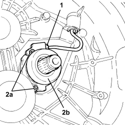

1820B30 CLUTCH HYDRAULIC ACTUATOR - R.R.
- Path
- Procedures > 18 CLUTCH UNIT > 1820 CLUTCH RELEASE CONTROLS > 1820B HYDRAULIC CLUTCH SYSTEM > 1820B30 CLUTCH HYDRAULIC ACTUATOR - R.R.
- Kind
- repair procedure (removal / refitting; the operation number is the code)
- Applies to
- all engines; all production periods
- Interactive page
- https://sloeber94.github.io/elrnDB-aBrrSpdr/en/#/946002048
Applies to: engines: 3.2 JTS; all production periods
 Removing
Removing
 Refitting
Refitting1. Unscrew the connector and disconnect the hydraulic clutch actuator rigid pipe.
2. Undo the bolts (2a) and remove clutch hydraulic actuator (2b) complete with seal.

Applies to: engines: 3.2 JTS; all production periods
Refitting
Removing- Check the condition of the clutch hydraulic actuator sealing ring and moisten slightly with transmission fluid.
- Place the clutch hydraulic actuator in its housing and secure it using the bolts.
Component | Fastening | dia | Value (daNm) | Validity |
|---|---|---|---|---|
Hydraulic clutch actuator | Bolt | - | 0.6 ÷ 1.2 |
- Connect the connector for the rigid pipe to the clutch hydraulic actuator and tighten it.
Applies to: engines: 2.2 JTS, 2.4 JTD 20v; all production periods
Removing
RefittingOp. 4450B12 FRONT WHEELS (TWO) - R+R
Op. 1076B72 INTERMEDIATE EXHAUST PIPE WITH HOSE SECTION - R+R
Op. 4410D10 FRONT SUSPENSION FRAME - R+R
Op. 5530B52 BATTERY SUPPORT/DRIP TRAY - R.R
Op. 1072C43 EXHAUST MANIFOLD UPPER BULKHEAD R R
Op. 1072C42 EXHAUST MANIFOLD LOWER BULKHEAD R R
Op. 2110A10 MANUAL GEARBOX AND DIFFERENTIAL - R + R
Op. 1820B38 HYDRAULIC CLUTCH ACTUATOR WITH COAXIAL CONTROL - R.R WITH GEARBOX REMOVED
Applies to: engines: 2.2 JTS, 2.4 JTD 20v; all production periods
Refitting
RemovingOp. 1820B38 HYDRAULIC CLUTCH ACTUATOR WITH COAXIAL CONTROL - R.R WITH GEARBOX REMOVED
Op. 2110A10 MANUAL GEARBOX AND DIFFERENTIAL - R + R
Op. 1072C42 EXHAUST MANIFOLD LOWER BULKHEAD R R
Op. 1072C43 EXHAUST MANIFOLD UPPER BULKHEAD R R
Op. 5530B52 BATTERY SUPPORT/DRIP TRAY - R.R
Op. 4410D10 FRONT SUSPENSION FRAME - R+R
Op. 1076B72 INTERMEDIATE EXHAUST PIPE WITH HOSE SECTION - R+R
Op. 4450B12 FRONT WHEELS (TWO) - R+R
Op. 0010T41 MANUAL GEARBOX OIL CHECK LEVEL AND TOP UP IF NECESSARY
Topics linked from this page (12)
- 0010T41 MANUAL GEARBOX OIL CHECK LEVEL AND TOP UP IF NECESSARY
- 1004B10 POWER UNIT WITH MANUAL GEARBOX - R.R
- 1004D10 POWER UNIT (MANUAL GEARBOX), REMOVED, DISMANTLE AND REASSEMBLE
- 1072C42 EXHAUST MANIFOLD LOWER BULKHEAD R R
- 1072C43 EXHAUST MANIFOLD UPPER BULKHEAD R R
- 1076B72 INTERMEDIATE EXHAUST PIPE WITH HOSE SECTION - R+R
- 1820B38 HYDRAULIC CLUTCH ACTUATOR WITH COAXIAL CONTROL - R.R WITH GEARBOX REMOVED
- 2110A10 MANUAL GEARBOX AND DIFFERENTIAL - R + R
- 4410D10 FRONT SUSPENSION FRAME - R+R
- 4450B12 FRONT WHEELS (TWO) - R+R
- 5530B10 BATTERY - R+R
- 5530B52 BATTERY SUPPORT/DRIP TRAY - R.R